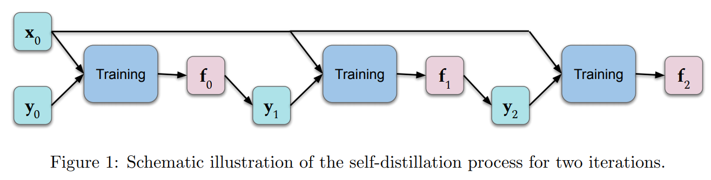

1.Self-Distillation Amplifies Regularization in Hilbert Space
H Mobahi, Mehrdad Farajtabar, et al. arXiv 2020
DEEP LEARNING
THEORY & FOUNDATIONS
知识蒸馏（Knowledge distillation）
知识蒸馏将知识从一个复杂的机器学习模型迁移到另一个紧凑的机器学习模型,而一般紧凑的模型在性能上会有一些降低。
从头学习一个新模型就是从有限的数据中近似一个未知的函数。如果让新模型近似原模型，因为原模型的函数是已知的，我们可以使用很多非训练集内的伪数据来训练新模型，这显然要更可行。
为了达到更好的预测，原始训练模型时通常会使用过参数化的网络或者使用集成学习方法。知识蒸馏可以得到性能相近（输出的概率分布充分接近）但体积小得多的模型。
总体来说知识蒸馏是一个简单而有效的模型压缩/训练方法。这大体上是因为原模型的softmax提供了比one-hot标签更多的监督信号
自蒸馏（self-distillation）
当新模型的结构和之前完全相同时，被称作自蒸馏。一般来说这样子得到的模型都会比原始的模型泛化性能更好（过拟合的程度更低）。
该文对这种现象进行了细致的理论分析（发生了什么，为何有效）。

主要结论：几轮self-distillation会通过逐渐限制代表解的基函数的数量，这往往会减少过度拟合（次数过多会导致欠拟合，影响性能）。
希尔伯特空间
希尔伯特空间就是完备的内积空间
在数学分析中，完备空间又称完备度量空间或称柯西空间（Cauchy space）。如果一个度量空间中的所有柯西序列都收敛在该空间中的一点，则称该空间为完备空间。
在数学中，度量空间是个具有距离函数的集合，该距离函数定义集合内所有元素间之距离。此距离函数被称为集合上的度量。度量空间中最符合人们对于现实直观理解的是三维欧几里得空间（Euclidean space）。
这里的“距离”是一个抽象概念，不仅仅指两点间的直线距离，还包括向量距离、函数距离、曲面距离等。
在数学中，柯西序列、柯西列、柯西数列或基本列是指这样一个数列，它的元素随着序数的增加而愈发靠近。任何收敛数列必然是柯西列，任何柯西列必然是有界序列。
内积空间指的是添加了一个“运算方法”（或称“结构”）的向量空间（或称为“线性空间”，两者同义），这个新添加的运算方法即“内积（Inner product）”又称“标量积（Scalar product）”或称“点积（Dot product）”。内积将一对向量与一个纯量连接起来，允许我们严格地谈论向量的“夹角”和“长度”，并进一步谈论向量的正交性。
希尔伯特空间（Hilbert space）是有限维欧几里得空间（Euclidean space）的一个推广，使之不局限于实数的情形和有限的维数，但又不失完备性（不像一般的非欧几里得空间那样破坏了完备性）
2.Social Diversity and Social Preferences in Mixed-Motive Reinforcement Learning
Kevin McKee, Ian Gemp, et al. arXiv 2020
REINFORCEMENT LEARNING
NEUROSCIENCE
A
3.Targeted free energy estimation via learned mappings
- Peter Wirnsberger, Andy Ballard, et al. arXiv 2020
4.Static and Dynamic Values of Computation in MCTS
- Eren Sezener, P Dayan, arXiv 2020
- REINFORCEMENT LEARNING
5.On Contrastive Learning for Likelihood-free Inference
- C Durkan, I Murray, et al. arXiv 2020
- UNSUPERVISED LEARNING & GENERATIVE MODELS
6.Causally Correct Partial Models for Reinforcement Learning
Danilo Rezende, Ivo Danihelka, et al. arXiv 2020
UNSUPERVISED LEARNING & GENERATIVE MODELS
THEORY & FOUNDATIONS
7.Provably efficient reconstruction of policy networks
- B Mazoure, T Doan, et al. arXiv 2020
8.Normalizing Flows on Tori and Spheres
Danilo Jimenez Rezende, George Papamakarios, et al. arXiv 2020
UNSUPERVISED LEARNING & GENERATIVE MODELS
THEORY & FOUNDATIONS
9.Locally-Adaptive Nonparametric Online Learning
- Ilja Kuzborskij, N Cesa-Bianchi, arXiv 2020
- THEORY & FOUNDATIONS
10.MEMO: A Deep Network for Flexible Combination of Episodic Memories
- Andrea Banino, Adrià Puigdomènech, et al. arXiv 2020
- DEEP LEARNING
11.Learning Robust and Multilingual Speech Representations
Kazuya Kawakami, L Wang, et al. arXiv 2020
DEEP LEARNING
UNSUPERVISED LEARNING & GENERATIVE MODELS
12.Silly rules improve the capacity of agents to learn stable enforcement and compliance behaviors
- Raphael Koster, D Hadfield-Menell, et al. arXiv 2020
13.Q-Learning in enormous action spaces via amortized approximate maximization
- Tom Van de Wiele, David Warde-Farley, et al. arXiv 2020
14.The Incentives that Shape Behaviour
R Carey, Eric Langlois, et al. arXiv 2020
SAFETY
THEORY & FOUNDATIONS
15.Smooth markets: A basic mechanism for organizing gradient-based learners
- David Balduzzi, Wojciech Marian Czarnecki, et al. arXiv 2020
- THEORY & FOUNDATIONS
16.Sideways: Depth-Parallel Training of Video Models
Mateusz Malinowski, Grzegorz Swirszcz, et al. arXiv 2020
DEEP LEARNING
NEUROSCIENCE
17.A distributional code for value in dopamine-based reinforcement learning
Will Dabney, Zeb Kurth-Nelson, et al. Nature 2020
NEUROSCIENCE
REINFORCEMENT LEARNING
18.AlphaFold: Improved protein structure prediction using potentials from deep learning
- Andrew Senior, Richard Evans, et al. Nature 2020
- DEEP LEARNING
19.Artificial Intelligence, Values and Alignment
- Iason Gabriel, arXiv 2020
- SAFETY
20.Making Sense of Reinforcement Learning and Probabilistic Inference
Brendan O’Donoghue, Ian Osband, et al. ICLR 2020
REINFORCEMENT LEARNING
THEORY & FOUNDATIONS
21.A Deep Neural Network’s Loss Surface Contains Every Low-dimensional Pattern
Wojciech Marian Czarnecki, Simon Osindero, et al. arXiv 2020
THEORY & FOUNDATIONS
DEEP LEARNING
22.Continuous-Discrete Reinforcement Learning for Hybrid Control in Robotics
- Michael Neunert, Abbas Abdolmaleki, et al. CoRL 2020
23.International evaluation of an AI system for breast cancer screening
- Scott Mayer McKinney, Marcin T. Sieniek, et al. Nature 2020
- DEEP LEARNING
24. Options of Interest: Temporal Abstraction with Interest Functions
- K Khetarpal, M Klissarov, et al. AAAI 2020